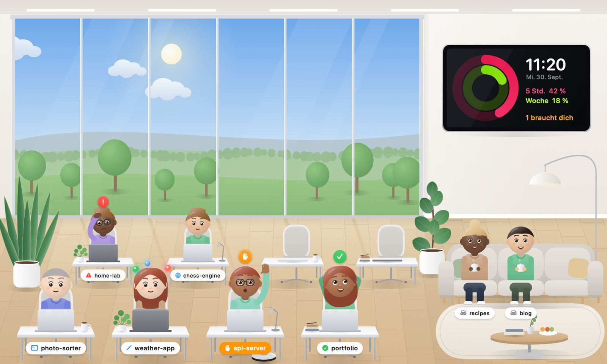
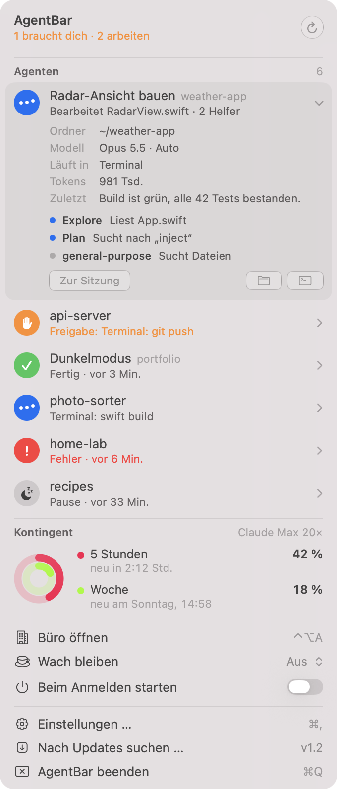
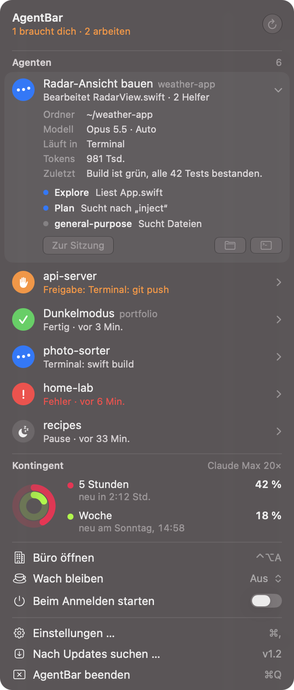
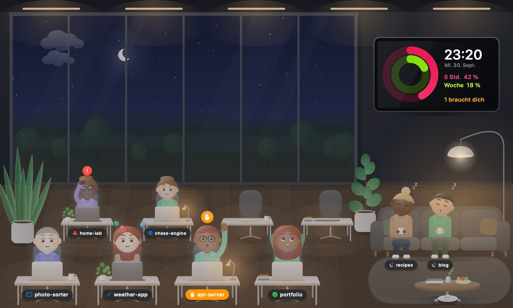
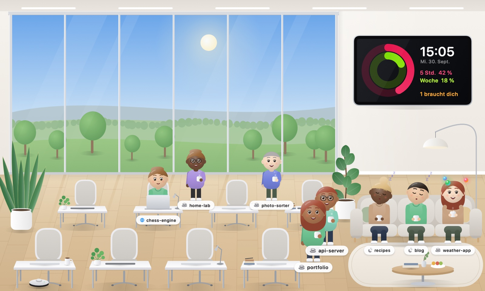

AgentBar
Your Claude Code agents, right in the menu bar.
And a tiny office where they actually work.
Free & open source · macOS 14 or later · Apple Silicon · Interface in German
Your Claude Code agents, right in the menu bar.
And a tiny office where they actually work.
Free & open source · macOS 14 or later · Apple Silicon · Interface in German

Designed to feel like a native macOS 27 system menu – quiet until an agent needs you.


Working, waiting for approval, done, error or idle – for every session. With Claude Code hooks it knows instantly instead of guessing.
Your 5-hour and weekly Claude plan usage, Apple-Watch style. The token is only read – never refreshed, never stored.
Subagents show up as helpers of their session – in the list, and as glowing spheres orbiting their character.
Click a session and the exact Terminal tab it runs in comes to the front.
When an agent needs you, finishes or fails – and before your plan usage runs out.
Stop your Mac from sleeping – always, or only while agents are working.
Press ⌃⌥A. Every session gets a desk. They type while working, raise a hand when they need you, and walk over for a coffee when they're idle. The sky follows your local time.


You need Claude Code on a Mac with Apple Silicon.
Get AgentBar.zip from the latest release, unzip it and move AgentBar.app to /Applications.
AgentBar isn't notarized by Apple, so macOS blocks it once. Open System Settings → Privacy & Security and click Open Anyway – or run:
xattr -dr com.apple.quarantine /Applications/AgentBar.appOnly needed once. Updates from the built-in update button are verified with an Ed25519 signature.
Click Hooks einrichten in the dropdown. AgentBar adds small hook commands to ~/.claude/settings.json (with a backup). They only append status lines to a local file – no network.
Allow notifications when asked, optionally enable Beim Anmelden starten (launch at login), and press ⌃⌥A for the office.
Everything stays on your Mac. AgentBar reads local Claude Code logs and talks to exactly two servers: api.anthropic.com for your plan usage and api.github.com for updates. No analytics, no telemetry. The code is open source.